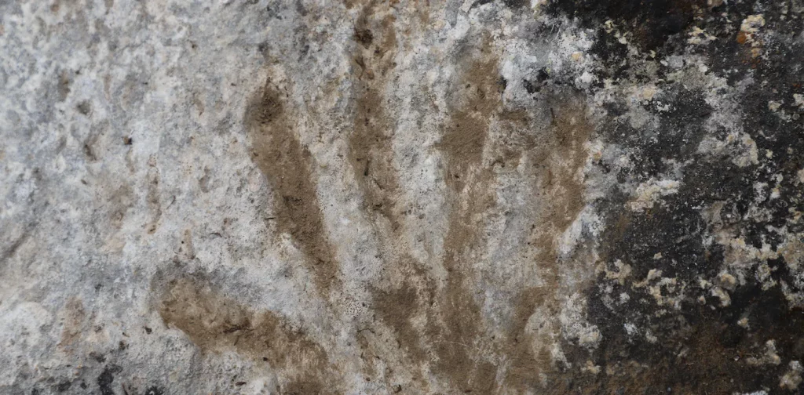
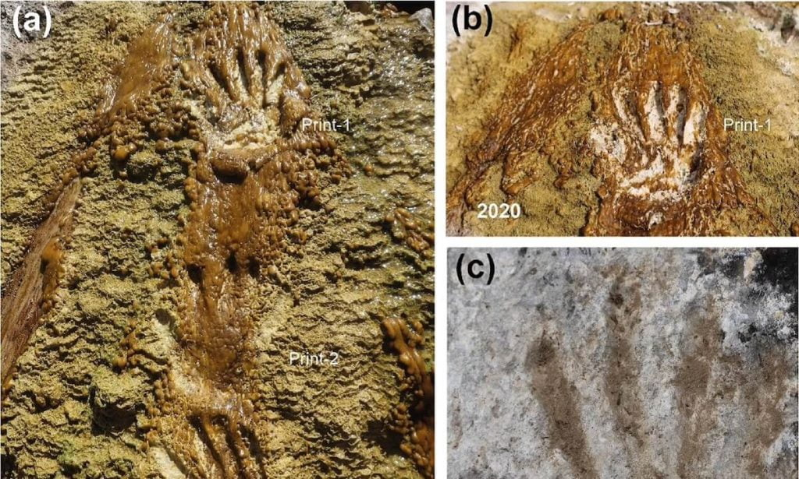
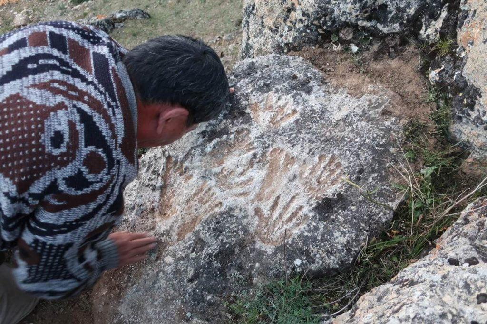
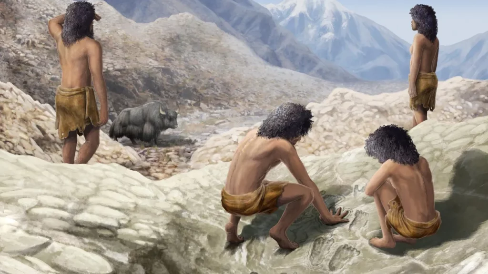

ရှေးဦး လူသားတွေဟာ အနုပညာ ဖန်တီးမှု အများအပြားကို ပြုလုပ်ခဲ့ ကြပါတယ်။ ဒီအထဲမှာ ကျောက်ဂူ နံရံတွေက ဆေးရေး ပန်းချီတွေ၊ ကျောက်သား နံရံမှာ ထွင်းထုထားတဲ့ ဖန်တီးမှု လက်ရာတွေနဲ့ ပန်းပုရုပ်တွေ ပါဝင် ကြပါတယ်။ ဒီ အနုပညာ လက်ရာတွေကနေ ရှေးဦး လူသားတွေ သူတို့ရဲ့ ပတ်ဝန်းကျင်ကို ဘယ်လို မြင်သလဲ ဆိုတဲ့ အမြင်ကိုလဲ နှောင်းလူတို့ လေ့လာ သိရှိခွင့် ရခဲ့ ကြပါတယ်။
“Cave Art” ဂူအနုပညာ လို့ ခေါ်ဝေါ်ကြတဲ့ ဒီ သမိုင်း မတင်မီ ခေတ်က အနုပညာ လက်ရာတွေကို ရှေးဟောင်း သုတေသီ တွေနဲ့ မနုဿ ဗေဒ ပညာရှင်တွေ အထူး စိတ်ဝင်တစား လေ့လာ ကြပါတယ်။
ဒီ အနုပညာ လက်ရာတွေ ဖန်တီးခဲ့တဲ့ အချိန်ကာလနဲ့ လူသားတွေ ဆင့်ကဲ ပြောင်းလဲမှု ဖြစ်စဉ်ကိုလဲ တိုက်ဆိုင် စစ်ဆေး ခဲ့ကြပါတယ်။ အထူးသဖြင့် လူသားတွေ “လက်မ” ကို ကောင်းမွန်စွာ အသုံးချ နိုင်တဲ့ အချိန်နဲ့ သမိုင်း မတင်မီ ခေတ် အနုပညာ လက်ရာတွေ ဖွံဖြိုး တိုးတက် လာမှုကိုလဲ တိုက်ဆိုင် စစ်ဆေး ခဲ့ကြပါတယ်။
ဒါပေမယ့် ဒီလို အနုပညာ လက်ရာတွေ ဖန်တီးနိုင် တာဟာ ဟိုမို ဆေးပီးယန်း (Homo sapiens) လို့ ခေါ်တဲ့ ခေတ်သစ် လူသား မျိုးနွယ်တွေ မှာတင် အစွမ်းရှိတာ မဟုတ်ပါဘူး။ ၂၀၁၈ ခုနှစ်က စပိန်နိုင်ငံမှာ ရှာဖွေ တွေ့ရှိခဲ့တဲ့ ဂူနံရံ ပန်းချီ တွေဟာဆိုရင် အခု မျိုးတုန်းပျောက်ကွယ်သွား ခဲ့ပြီဖြစ်တဲ့ နီယန်ဒါသဲလ် (Neanderthal) ရှေးလူတွေ ဖန်တီးခဲ့တဲ့ ရှေး အနုပညာ လက်ရာတွေ ဆိုတာကို တွေ့ရှိ ခဲ့ကြပါတယ်။

ဒါပေမယ့် အခု တိဘက်မှာ နောက်ဆုံး ရှာဖွေ တွေ့ရှိခဲ့တဲ့ နံရံ ပေါ်က လက်ရာ တွေဟာ ဒီ စပိန်က နံရံဆေးရေး တွေထက် သက်တမ်း အများကြီး ပိုစောပါတယ်။ ဒီ တိဘက် အနုပညာ လက်ရာ တွေရဲ့ သက်တမ်းဟာ ပညာရှင် တွေရဲ့ ခန့်မှန်းချက် အရ လွန်ခဲ့တဲ့ နှစ်ပေါင်း ၁၆၉,၀၀၀ ကနေ ၂၂၆,၀၀၀ အကြားမှာ ရေးဆွဲခဲ့တာ ဖြစ်မယ်လို့ ဆိုပါတယ်။ ဒါဟာ နီယန်ဒါသဲလ် တွေရဲ့ နံရံ ပန်းချီတွေထက် အများကြီး ပိုပြီး သက်တမ်းရင့်ပါတယ်။
ထူးဆန်းတာ ကတော့ အခု ရှာဖွေ တွေ့ရှိ ခဲ့တဲ့ အနုပညာ လက်ရာ တွေဟာ ဂူတွင်း နံရံတွေပေါ် ရေးဆွဲထား ခဲ့တာ မဟုတ်ပဲ လူသူ အရောက်အပေါက် အလွန်နည်းတဲ့ ကျောက်တောင်ပေါ်မှာ ဖန်တီး ထားခဲ့တာပဲ ဖြစ်ပါတယ်။
အခု တွေ့ရတဲ့ ဖန်တီးမှု တွေဟာ အဓိက ကတော့ လက်ရာ နဲ့ ခြေရာ တွေကို ကျောက်သားပေါ်မှာ ပြုလုပ် ဖန်တီး ထားခဲ့တာ ဖြစ်ပါတယ်။ ဒီ လက်ရာတွေကို တိဘက် ကုန်းမြင့်က ချီစန်း (Quesang) ရေပူစမ်းမှာ ရှာဖွေ တွေ့ရှိခဲ့တာပါ။
ဒီ ချီစန်း ရေပူစမ်းဟာ အမြင့်ပေ ၄,၂၆၉ မီတာ အမြင့်မှာ တည်ရှိပြီး အလွန် ဝေးလံ ခေါင်သီတဲ့ အရပ်ဒေသလဲ ဖြစ်ပါတယ်။ ဒီ တွေ့ရှိချက်ဟာ တိဘက် ဒေသမှာ ရှေးလူသားတွေ အခြေချ နေထိုင်ခဲ့တဲ့ ရှေးအကျဆုံး အထောက်အထားလဲ ဖြစ်ပါတယ်။

ဒီ ခြေရာ လက်ရာ တွေရဲ့ အတိုင်းအတာ အရ ဒီ ဖန်တီးမှု တွေဟာ လူကြီးတွေ ပြုလုပ် ဖန်တီးခဲ့တာ မဖြစ်နိုင်ဘူးလို့ ပညာရှင် တွေက သုံးသပ် ကြပါတယ်။ ဒါဟာ ရှေး သမိုင်းမတင်မီ ခေတ်က ကလေးတွေ ဖန်တီးခဲ့တဲ့ အလွန် ရှားပါးတဲ့ အနုပညာ လက်ရာ တွေအနက်က တစ်ခု ဖြစ်ပါတယ်။
“ဒီ တွေ့ရှိချက်ဟာ ရှေးလူသား တွေအထဲမှာ ကလေး အနုပညာရှင် တွေလဲ ရှိတယ် ဆိုတာကို ပြနေတဲ့ အချက် ဖြစ်ပါတယ်” လို့ ရှေးဟောင်း သုတေသန ပညာရှင် တွေက Science Bulletin သုတေသန ဂျာနယ်မှာ တင်ပြခဲ့တဲ့ သုတေသန စာတမ်းမှာ ရေးသား ထားပါတယ်။
စတွေ့တွေ့ ချင်းကတော့ ဒီ လက်ရာ ခြေရာ တွေကို အနုပညာ ဖန်တီးမှု တခုအဖြစ် မသတ်မှတ် ခဲ့ကြပါဘူး။ ပထမဆုံး ပညာရှင် တွေက ဒီ လက်ရာ တွေဟာ မတော်တဆ ဖြစ်ပေါ်ခဲ့တာ မဟုတ်ပဲ တမင် ပြုလုပ် ဖန်တီးထားတာ ဖြစ်တယ် ဆိုတာကို သက်သေ အထောက်အထား ရှာဖွေ ခဲ့ကြ ရပါတယ်။
ဒီလို သက်သေပြဖို့ တိဘက်က တွေ့ရှိတဲ့ လက်ရာတွေကို အီတလီမှာ ရှာဖွေ တွေ့ရှိ ခဲ့ကြတဲ့ သာမန် ခြေရာ တွေနဲ့ နှိုင်းယှဉ် ကြည့်ခဲ့ ကြပါတယ်။ ဒီလို နှိုင်းယှဉ်ရာမှာ ဘယ်လောက် အားစိုက်ပြီး ဖန်တီး ထားသလဲ၊ လက်ရာတွေ တခုနဲ့ တခု ကြား ဖြစ်ပေါ်လာတဲ့ ပုံသဏ္ဍာန် တွေ နဲ့ လက်ရာတွေ ဖြန့်ကျက် နေပုံတွေကို နှိုင်းယှဉ် ကြည့်ခဲ့ ကြပါတယ်။

အခု ပန်းချီ ဖန်တီးမှုမှာ ညာဖက် ခြေရာ ၄ ခု နဲ့ သူတို့ အပေါ် ထပ်နေတဲ့ ဘယ်ဖက် ခြေရာ တစ်ခု၊ နောက်ပြီး လက်ရာ ၅ ခုတို့ ပါဝင် ကြပါတယ်။ ခြေရာတွေဟာ ပျမ်းမျှ အလျှား ၁၉၂.၂၆ မီလီမီိတာ ရှည်ပါတယ်။
ဒီ ခြေရာတွေရဲ့ အရွယ်အစားနဲ့ ပုံသဏ္ဍာန် တွေကို အခုခေတ် လူသားတွေရဲ့ ခြေရာ တွေနဲ့ရော၊ ရှေးခေတ် လူသားတွေရဲ့ ခြေရာတွေ နဲ့ပါ နှိုင်းယှဉ် ကြည့်ခဲ့ ကြပါတယ်။ ဒီ နှိုင်းယှဉ် မှုအရ ဒီ ခြေရာတွေဟာ အသက် ၈ နှစ်ခန့် ကလေးငယ်ရဲ့ ခြေရာတွေ ဖြစ်မယ်လို့ သုံးသပ် ကြပါတယ်။
ဒီ ခြေရာတွေ အထဲက ခြေရာ နှစ်ခုက အခြား ခြေရာတွေနဲ့ အနည်းငယ် ကွဲပြား နေပါတယ်။ ဒါဟာ ဒီခြေရာတွေ ဖန်တီးစဉ်က ကလေးက ခြေချောင်းလေးတွေကို ကွေးထားလို့ သော်လည်းကောင်း၊ သို့မဟုတ် နောက်မှ ခြေရာကို ပြန်ပြုပြင် ထားတာ သော်လည်းကောင်း ဖြစ်နိုင်တယ်လို့ ဆိုပါတယ်။
သိပ္ပံ ပညာရှင် တွေဟာ ဒီ လက်ရာတွေကို ကျောက်နံရံမှာ ဘယ်လို ဖန်တီးခဲ့ ကြလဲ ဆိုတာကိုတော့ အဖြေ ပေးနိုင်စွမ်း မရှိ ကြပါဘူး။ ဒါပေမယ့် ကျောက်နံရံမှာ တိုက်ရိုက် ထွင်းထုတာ၊ ဒါမှမဟုတ် ရွှံ့စေးနဲ့ ပုံစံယူ ဖန်တီးတာ ဖြစ်နိုင်တယ်လို့ သုံးသပ် ကြပါတယ်။
ဒီ ခြေရာ လက်ရာတွေ ဖြစ်ပေါ်ပုံ အရ ဒါတွေဟာ တမင်တကာ ပြုလုပ် ဖန်တီးထားတယ် ဆိုတာကို ပညာရှင် တွေအကြား အားလုံး လက်ခံ ထားကြပါတယ်။ ဒါပေမယ့် ဒါဟာ “အနုပညာ” ဖြစ်တယ် မဖြစ်ဘူး ဆိုတာကိုတော့ ငြင်းခုန်နေ ကြဆဲ ဖြစ်ပါတယ်။
တဖက်က ကြည့်ရင်လဲ အနုပညာ ဆိုတာက သိပ္ပံ နည်းကျ အဓိပ္ပါယ် သတ်မှတ်လို့ ရတဲ့ ကိစ္စတခု မဟုတ်ပါဘူး။ ဒီတော့ အခု လက်ရာ တွေကို အနုပညာလို့ သတ်မှတ်ဖို့ သိပ္ပံ ပညာရှင် တွေအနေနဲ့ အဆုံးအဖြတ် ပေးဖို့ ခဲယဉ်းနေ ပါတယ်။
ဒါပေမယ့် သုတေသီ တွေကတော့ အခု သုတေသန ကနေ ရရှိတဲ့ အချက် နှစ်ချက်ကို ထောက်ပြ ကြပါတယ်။ ပထမ အချက်ကတော့ ဒါဟာ သက်တမ်းအားဖြင့် အစောဆုံး တွေ့ရှိရတဲ့ သမိုင်း မတင်မီခေတ် အနုပညာ လက်ရာ တစ်ခု ဖြစ်နိုင်တယ် ဆိုတဲ့ အထောက်အထား ဖော်ထုတ် ပေးနိုင်တာပဲ ဖြစ်ပါတယ်။
ဒုတိယ အချက်ကတော့ တိဘက်ကုန်းမြင့် ဒေသမှာ လူနေထိုင်တဲ့ အစောဆုံး အထောက်အထား တစ်ခု ဖြစ်ပါတယ်။
ဒီ သုတေသနကနေ ပေးတဲ့ အရေးအကြီးဆုံး သင်ခန်းစာ ကတော့ ကလေးတွေဟာ ရှေး သမိုင်း မတင်မီ ခေတ်ကတဲက တီထွင်ဖန်တီးနိုင်စွမ်း ရှိကြတယ် ဆိုတာပဲ ဖြစ်ပါတယ်လို့ ဒီ သုတေသနမှာ ပါဝင်တဲ့ ပညာရှင် တစ်ဦးက ထောက်ပြပါတယ်။
